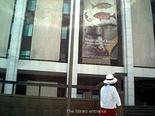
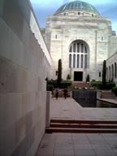
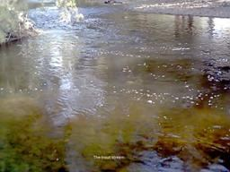

Tarpeena Tales 8
Like most Poms I enjoy a drive in the country so taking that to the extreme Nuran and I drove over to see Jim and Angela (and their two dogs) in Queanbeyan. A mere Saturday drive of some 1100 kilometres, passing through Canberra on the way. Actually we weren’t meant to pass RIGHT through Canberra but owing to some misunderstood directions and a complete lack of map reading skill that is what we did until guided to their place with the help of a mobile phone. Ain’t technology great when it can be used to get you out of the shit. Parliament House looked very nice as we passed under it and even better when we did a U turn and passed under it from the opposite direction.
Quenbeyan is a satellite city of Canberra and nestles against some large hills, actually mountains - well so they seemed to me as I walked Jim and Angela’s dogs up them in the morning.
The weather was kind to us, sunshine every day, and being so close to Canberra we did some touring of the nation’s capital and its attractions.
The first day I decided to get me some education so we went to the National Library. 

They had Banks journal open too and his writing could be read as clearly today as then. He was an educated man. He should have named the new place not Cook. Fascinating to see 200 year old stuff though.
Anyway in pursuit of more education we went to the National Gallery. Now this place is full of pictures, some of them quite good. But that wasn’t all they had, they had a section of Aboriginal art and part of that was a forest of didgeridoos decorated in different styles.
None of them were playable though as the security guard had no sense of fun. I had previously learnt to play Jim’s harmonica in tune with Kippers howling and I thought a humm on the didgeridoo would progress my musical talent but the guard thought otherwise. The first picture we saw was Blue Poles and the next was of a nude bloke who didn’t have a blue pole but was pretty well endowed and circumcised. I didn’t notice the latter detail but Nuran did. He had three naked sheilas fawning over him whom I noticed and Nuran didn’t. Funny how good art means different things to different people ain’t it?
We wandered around the art gallery for a long time and the guards wandered around with us, I thought it must have been because of our didgeridoo experience but on reflection it was probably Nuran carrying the camera around with her. We didn’t see the “no photos” sign until we were leaving.
After lunch we went to see Old Parliament House. I wanted to sack the Prime Minister on the steps but Howard wasn’t there so it was a waste of time. Good view though from the steps. Long may we say “God save the Queen for nothing will save the Governor General etc….”
Great place for history and historical things is Canberra.
We went to the War Memorial with Jim and Angela and David and Jacqueline (Angela’s brother and sister). 

The Sound and Vision Library is great for old people who can remember black and white TV and Number 96.The progress since TV and film and radio first started is amazing and taken for granted nowadays. Brought back memories of when we were young sitting in the lounge nursing babies and watching the box together. Now we just watch the box together. Time flies.
Jim promised us a fishing trip to a remote trout stream. The stream wasn’t that remote but the way we took to get there was. Angela’s Suzuki has been to places its designers have never dreamed of. It has climbed mountains where the only vehicle before it has been a D4 dozer. Descended on tracks where a mountain goat would need spikes to hold its footing and forded streams where the clinging arms of monstrous blackberry plants threatened to engulf and halt our progress.
Mind you every track we took seemed to have a fallen tree impeding our path just before our turnoff meaning a detour of some note or a locked gate at the end of it so we couldn’t get to the river and detoured again. There was no warning sign saying “only fools go down this hill in a Suzuki, most use parachutes”. So we pressed on to the elusive stream. 

It was great adventure. And the scenery was magnificent.
We got to the river but it was too late to fish so we took the bitumen road home. Next time I think Jim is taking the long cut by the bitumen and not the shortcut via the highest peak in the Brindabella ranges.
The evenings were livened up with the help of Jim’s beer and darts. Jim’s beer is in a keg system and very quaffable. Jim and David introduced me to a new game of darts which involved getting three of everything. Towards the end I could only see two of everything and they beat me. Not all the time just some of the time.
Time flew by quickly and the trip home here to Tarpeena proved easier than the going over. We knew our way of out Canberra and only got a little bit lost this time. In Canberra every roundabout looks the same. At least they don’t have that scourge of traffic lights that other cities have.
I have received a bit of education and spent some quality time with Jim and Angela seen scenery I marvelled at and we want to go again.